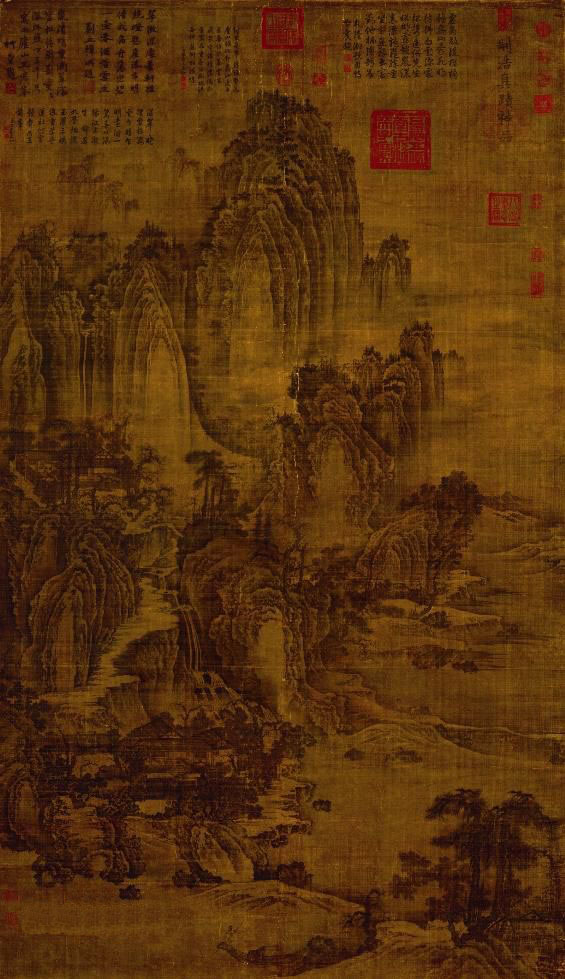
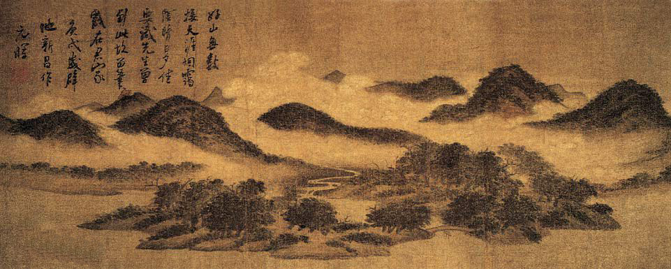
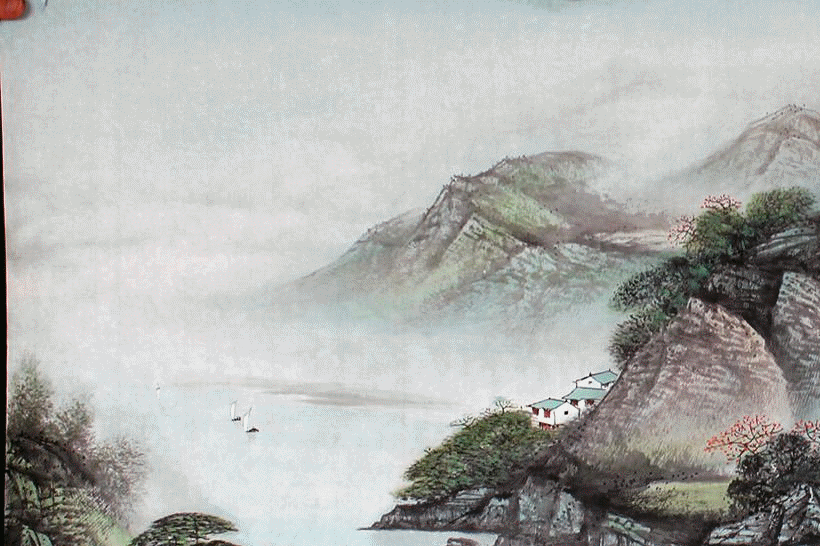

水墨画：由水和墨经过调配水和墨的浓度所画出的画，是绘画的一种形式，更多时候，水墨画被视为中国传统绘画，也就是国画的代表。也称国画，中国画。墨水画是中国传统画之一。墨水是国画的起源，以笔墨运用的枝法基础画成墨水画。线条中锋笔，侧锋笔，顺锋和逆锋，点染，擦，破墨，拨墨的枝法。墨于水的变化分为五色。画成作品，题款，盖章。就是完整的墨水画作品。 基本的水墨画，仅有水与墨，黑与白色，但进阶的水墨画，也有工笔花鸟画，色彩缤纷。后者有时也称为彩墨画。在中国画中，以中国画特有的材料之一，墨为主要原料加以清水的多少引为浓墨、淡墨、干墨、湿墨、焦墨等，画出不同浓淡（黑、白、灰）层次。别有一番韵味称为“墨韵”。而形成水墨为主的一种绘画形式。 水墨画是中国汉族特色较强的一种绘画艺术形式，借助具有本民族特色的绘画工具和材料（毛笔、宣纸和墨），表现具有意象和意境的绘画。其特征主要有两个方面，一是从工具材料上来说，水墨画具有水乳交融，酣畅淋漓的艺术效果。具体地说就是将水、墨和宣纸的属性特征很好地体现出来，如水墨相调，出现干湿浓淡的层次；再有水墨和宣纸相融，产生溵湿渗透的特殊效果。二是水墨画表现特征，由于水墨和宣纸的交融渗透，善于表现似像非像的物象特征，即意象。这种意象效果能使人产生丰富的遐想，符合“中国绘画注重意境”的审美理想。 凡质料粗糙，几乎不是烟料，形同土块，用手敲之，声音喑哑，体轻呈灰白色，墨模粗糙，墨料不好，这些是伪品的特征。还有一种伪品，是使用一种炭晶石，一种石质材料磨成的假墨。对仿品又如何鉴别呢？清代墨家仿明代墨，一种是只标明 年款，不署墨家名款。另一种只标时某墨家仿明代某墨家，这类有仿家自己的名款，也有被仿家的名款，是为宣扬自己而不是骗人，因此有人把清代初年制的精品墨原名款挖去，再用墨蜡填平，并在墨蜡处镌刻名章、年款、略施金色加以打磨。这种仿品不易识别。 墨的品种繁多，实用本色墨不仅数量多，形状大体相同。我们可以识别墨正反两面是否刻上文字及图案（即墨名）。左右两侧是否有监制单位名称。也有在侧面镌刻年代的，墨的顶端刻有“超漆烟”、“漆烟”、“顶烟”、“桐油烟”字样，表示该墨锭属油烟墨范畴；刻有“黄山松烟”、“大卷松烟”、“松烟”等字样的表示该墨锭属松烟范畴；刻有“全烟”、“精烟”、“净烟”等字样，该墨属炭黑墨范畴。 总之，要求鉴藏者有相当的知识和经验。首先要求大体熟悉古墨源流的发展演变史，知道古代名墨的主要产地和著名的制墨宾的姓氏名款，对名家墨的著名的墨模式样也要有一定的了解。 另外从质地来说，新墨和旧墨也有较明显的差别。新墨带灰色，虽浓厚不朗润，旧墨纯黑朗润，色泽纯黑，色感厚实。新墨由于和胶往往不匀，其墨色也就显得浓淡、厚薄不匀，旧墨由于制法严谨、加上存放时间久远，其胶自然匀实，其黑色平整，而且不粘笔毫。新墨气味有燥性，旧墨有一股自身的古朴淡远的馨香之气，且显出一种古朴的色调。 |